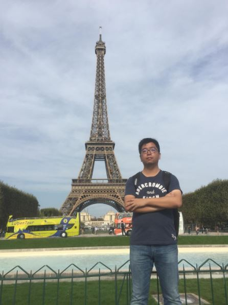
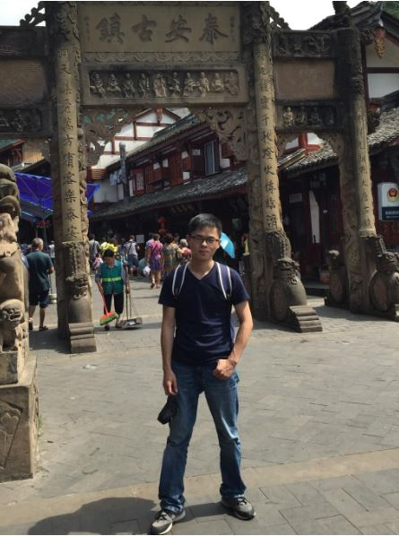

Postdocs¶
{kind=link}
Dr Xu Yang obtained his bachelor’s and master’s degrees from College of Automation Engineering at Nanjing University of Aeronautics and Astronautics, and obtained his Ph.D. degree of mechatronic engineering from School of Aerospace Engineering at Xiamen University in June 2019. From September 2016 to September 2018, he got CSC support and studied at National University of Singapore as an exchange Ph.D. student under the supervision of IEEE Fellow Prof. Ben M. Chen. He published more than ten SCI journal papers, attended several international conferences, won 2017 iMAV indoor/outdoor championships and 2018 IEEE CGNCC “Feng Ru” best paper finalist award. His research interests are single/multiple unnamed systems control, planning and decision making.
{kind=link}
Dr Huazi Cao obtained his bachelor’s degree from the College of Aerospace and Civil Engineering at Harbin Engineering University, China, in 2013. He got his PhD degree of aeronautical and astronautical Science and Technology from School of Aeronautic Science and Engineering at Beihang University of China in June 2018. His previous research focused on flight dynamics and control of fixed-wing aircraft. At present, his research interests lie in control and planning of micro aerial vehicles and aerial robotic manipulation.